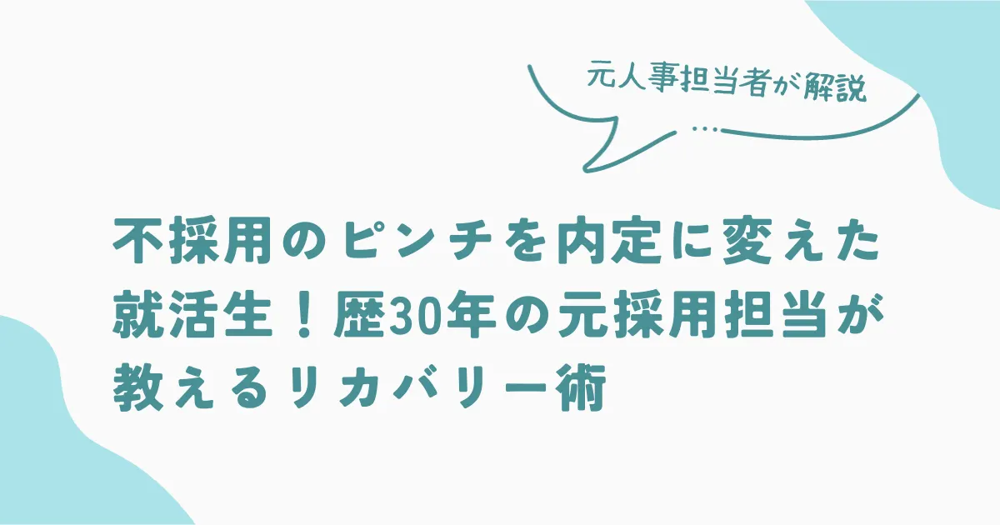
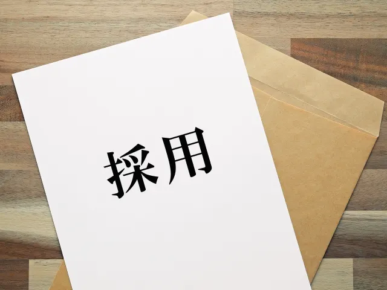

不採用のピンチを内定に変えた就活生！歴30年の元採用担当が教えるリカバリー術

「さっそく、本日からメンタルトレーニングをはじめております。二度と同じ失敗は繰り返さないことをお誓い申し上げます。」これは、最終面接に遅刻してしまった学生からのお詫びメールの一文です。
「面接に遅刻なんて間違いなくアウトでしょ？」誰もがそう思うと思います。
もちろん遅刻してきた就活生に良い印象をもつ面接官はいません。しかし、当時ホテルを運営する企業の人事部長だった私は、この学生を採用しました。採用の決め手になったのはこのメールです。
この記事を読めば面接官が何を見て合否を判断しているのかがわかります。たとえ失敗しても、リカバリーは可能です。
可能性か能力か？採用枠は1名
当時、私は4つのホテルを運営する中小企業の人事責任者でした。今回採用するのは従業員50名ほどの小規模ホテル。この年は中途採用を行なったため、新卒の採用人数はおさえなければならず、採用枠はわずか1名でした。15名の応募者の中から、エントリーシートや履歴書をもとに社内で協議した結果、1次面接は7名に絞り込みました。
冒頭で紹介したメールを送ってきた女性の応募者は、その中の1人です。応募者の中には専門学校に通い専門的な知識を学んでいる学生も多く、新卒と言えど即戦力に近い人材が採用できるチャンスでした。しかし、彼女は一般の学校を卒業予定で特に専門知識があったわけではありません。
正直、スキル面ではむしろ他の学生に比べて劣っていました。
それでも、1次面接では会ってみたいと思いました。とにかく字がきれいで、文面もとても丁寧だったので、強く印象に残ったのが理由です。
1次面接で彼女と話した時、アナウンサーのように丁寧な話し方でハキハキ答えをするという印象を受けました。とにかく挨拶する時の笑顔がよく、思った通りの人物。特にホテリエ（ホテルで働く人のこと）への強い思いは圧倒的です。
「これは将来化けるかもしれない」そう思いました。
1次面接が終わって、最終面接に残ったのは2名。専門的にホテルのことを学んでいたスキルの高い学生と、ポテンシャルを秘めていた彼女です。スキル面では専門学校生の方が圧倒的に有利でしたが、1次面接でホテリエに対する思いを誰よりも感じたため、将来性が高いと判断し彼女が採用候補の1人となりました。
スキルの高い学生を採用するか、将来性のある学生を採用するか、人事部内でも決めかねるほど2人とも魅力的な人材です。通常であれば私が合否を決めますが、今回ばかりは判断がつかず、最終面接には支配人にも同席してもらい意見を聞くことにしました。
最終面接にまさかの遅刻
最終面接は支配人からの質問だけとし、支配人の合否の判断を尊重することにしました。面接は同日に行われ彼女は午前中、もう1名の学生は午後にセッティング。2人とも同じ日にしたのは、時間をあけると最初に面接した人の印象が薄くなってしまうためです。
彼女とは9時に約束をしていましたが、10分前に遅れそうだとの電話があり、結局5分遅れで到着しました。これまでの採用経験の中で面接に遅刻してくる学生は初めてで、私の中ではこの時点で不採用が確定した瞬間です。
通常であればこちらが先に面接室に入り応募者を迎え入れますが、今回は遅刻してきたこともあって彼女の方が先に面接室に入っていました。私たちが入室すると、遅刻してしまったことの謝罪をし深々と頭を下げる彼女。こちらから声をかけるまで頭をあげませんでした。
支配人は「遅刻してでも面接にきていただいたことに感謝します」とだけ言い、あえて理由は聞かず最終面接がスタート。支配人からの質問は志望動機1点のみ。公平な判断をするために2人とも同じ質問をすることに決めていました。
彼女の回答は実際に自分が家族で宿泊した時のエピソードを交え、どうしても当社のホテルで働きたいという熱い思いがこもった志望動機でした。
1次面接では話さなかったエピソードです。
具体的には、家族旅行で当ホテルを利用した時にシャワーの勢いが弱く、フロントに伝えたところ、グレードの高い客室に変更してもらったとのこと。別のホテルで同じことがあったが、謝罪されただけでここまでの対応をされたことがなかったそうです。当ホテルのお客様に対する姿勢に感動したのが、志望したきっかけだという内容でした。
最終面接での振る舞いと志望動機となる新たなエピソードを聞いて、不採用だと決めていた私の考えは少し採用に傾きます。
一方、もう1人の学生は1次面接と同じ志望動機を話しました。支配人にとっては初めてですが、私にとっては2回目なので特に新鮮さはありませんでした。
面接官の心を動かしたお礼メール
翌日、彼女から面接のお礼と、改めてお詫びの言葉が添えられたメールが届きます。
そこには昨日の面接ではあえて聞かなかった遅刻の理由が書かれており、どうやら寝坊したことが原因だったようです。自分は極度のあがり症のため、支配人との最終面接と聞いて緊張のあまり眠れなかったとありました。
メールには謝罪と合わせて、具体的な今後の対策がいくつか記載されていたのが印象的です。
対策のひとつとして、彼女は自分の弱みは極度に緊張することだと理解しており、今後お客様の前で緊張しないためにメンタルトレーニングの教材を購入したと書かれていました。
最終的な会社の判断は「採用」

支配人に彼女から届いたメールを読んでもらい協議した結果、彼女を採用することにしました。
採用の理由は以下の通りです。
- 専門的なことは学んでいないが可能性がある
- 単なる憧れではなく、ホテリエとして働きたいという熱意が強い
- 謝罪のメールに今後の対策を書き、すでに改善に向けた行動をしている
- 遅刻したことに対する言い訳を一切しなかった
- 失敗を反省し、今後の教訓にしている
失敗に対し解決方法を模索し、すぐに行動する姿勢は、トラブルがつきもののホテル業界にとって重要です。支配人も私も、彼女には今後の成長が期待できるとの最終的な判断をしました。
知識は入社後に習得できますが、仕事をする上では熱い思いや熱量が重要なので彼女は当社にとって必要な人材だと満場一致で採用となったのです。
最終的に、能力よりも思いや可能性を重視しました。
面接で失敗してもリカバリー次第で好印象に
「最終面接で支配人と対面できると知り、1次面接とは別のエピソードを交えて話すことで熱意を伝えたかった」と彼女は入社後に語りました。面接のために作った志望動機ではなく、どうしても採用されたいという思いを伝えたかったそうです。
面接に遅刻した部分だけを見るとマイナスポイントで採用されることはないでしょう。
しかし、どうしても入社したいという彼女の強い思いと、弱点を克服するために動き出したという行動力が面接官の心を動かしたのです。面接官が一番重視しているのは企業に対する思いです。あなたの熱い気持ちが伝われば、マイナス印象をプラスに変えられます。
今回のケースのように、たとえ面接で失敗したとしてもリカバリー次第で採用される可能性は十分にあります。
採用・人事やAI活用のご相談を受け付けています
記事の執筆、採用支援、AI導入支援など、まずはお気軽にご相談ください。
ご相談はこちら